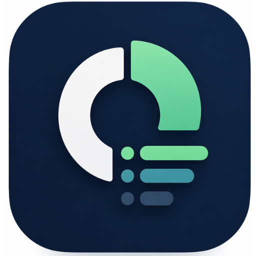

Chaque mois.
Même question.
OÙ.
EST.
PASSÉ.
TON.
ARGENT.
ARRÊTE DE
DEVINER
.

net
budget
VOICI
VRAIS
CHIFFRES
VRAIE
CLARTÉ
EN
SECONDES
ZÉRO
COMPTE
ZÉRO
TRACKING
JUSTE TOI.
Reprends le
contrôle.
net
budget
Disponible
Téléchargez sur
App Store
Bientôt
Bientôt sur
Google Play
netbudget.app
Sache ce qu'il te reste.